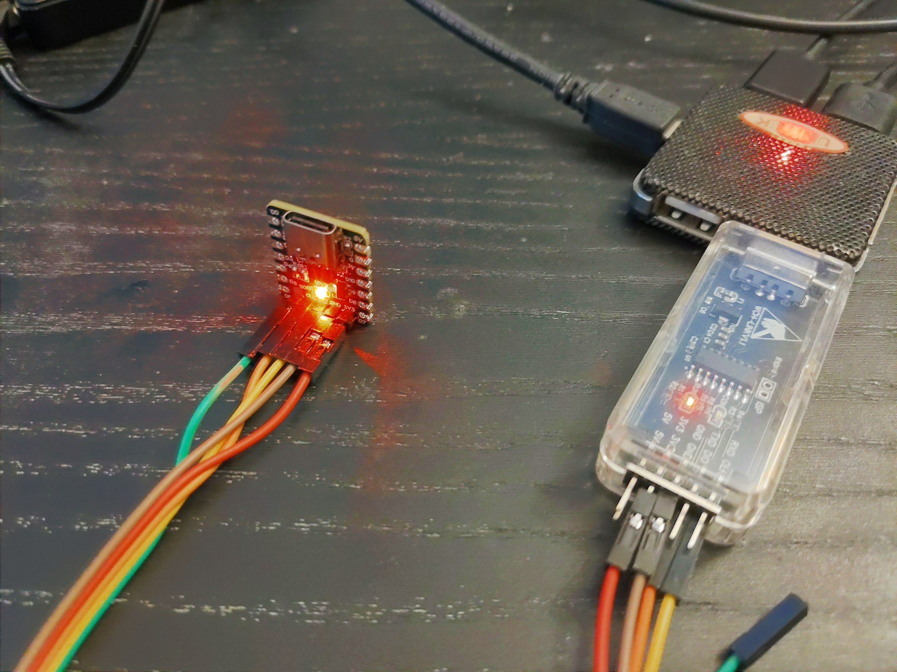

Blink¶
Published on 2025-01-27 in Mite 208.
I received the assembled boards from JLC and wanted to immediately test them, so I modified the ch32v20x blink example from the ch32v003fun library, and tried to program the board.
Sadly, I got an error telling me that the programmer is not connected to an MCU. I checked all the connections again, and checked the schematic, and found out that I mis-labeled the programming pins — the SWD and SWC are swapped. After changing the connections, it worked:
I don’t have much time to play with this right now, but the possibilities are in there. There is TinyUSB support for this board, and it has enough memory to run LUA or CircuitPython — of course getting that to work would be a considerable effort, but it should be possible.